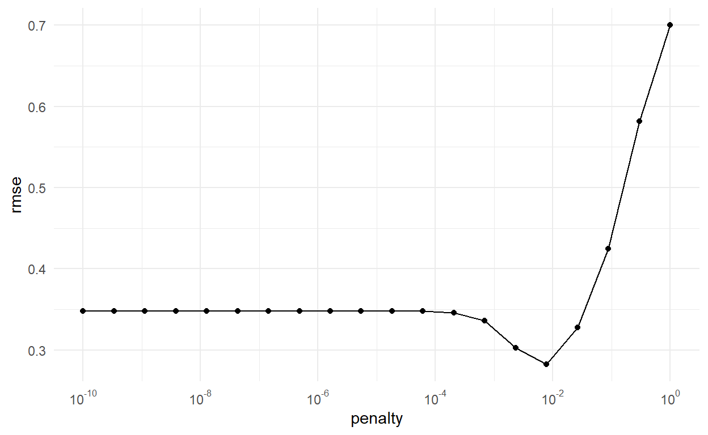
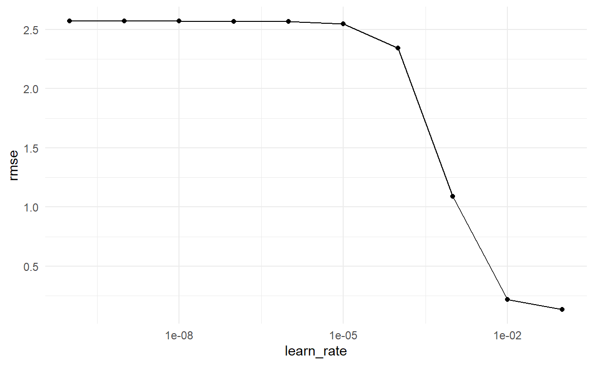
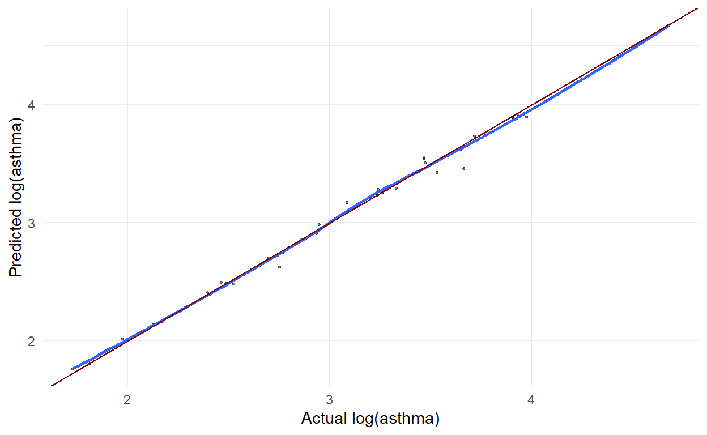
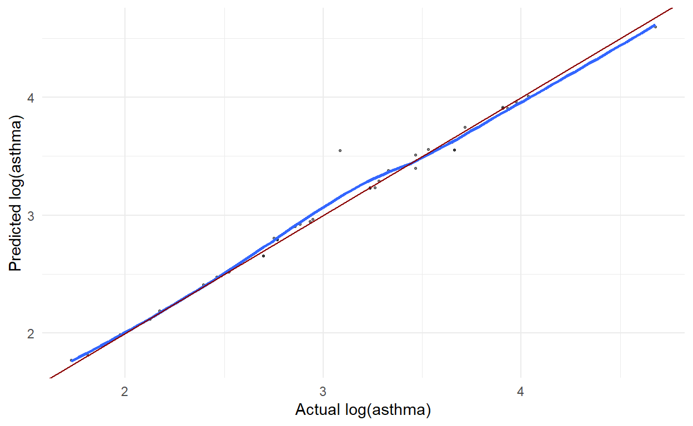
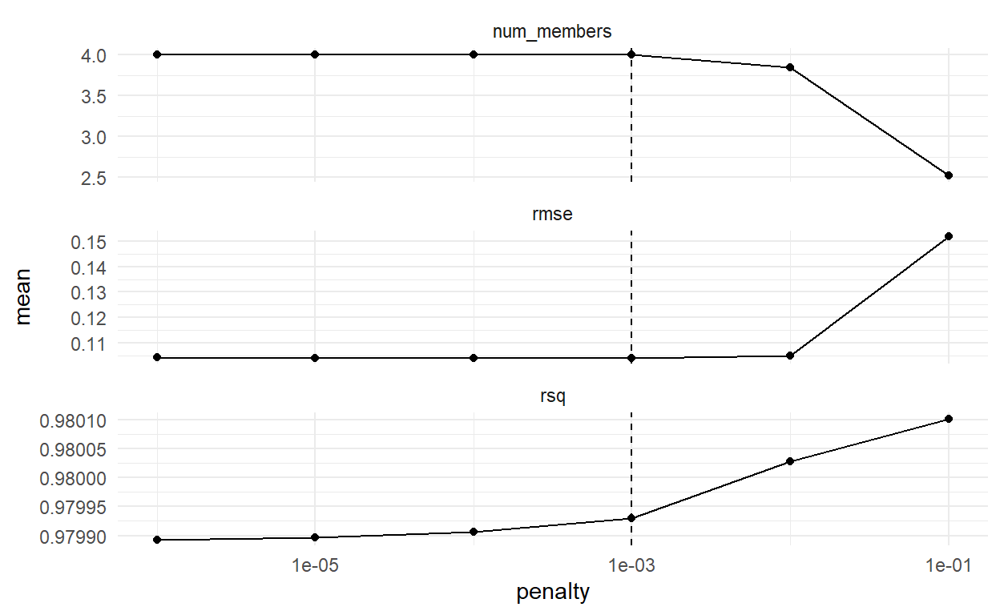
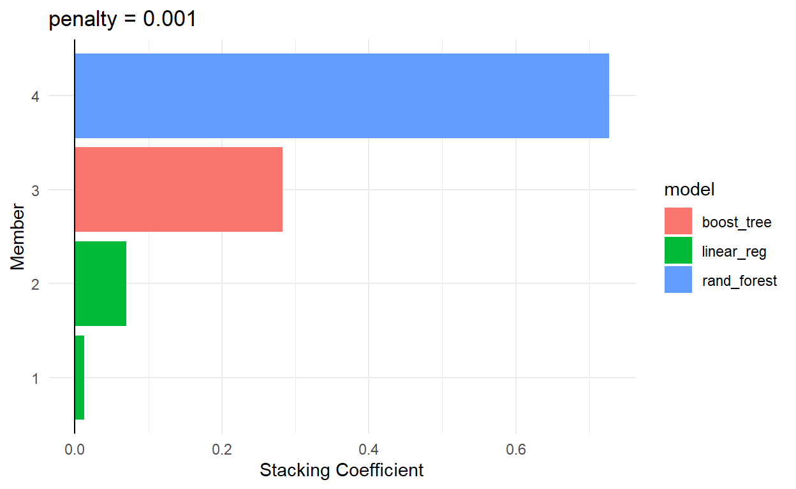
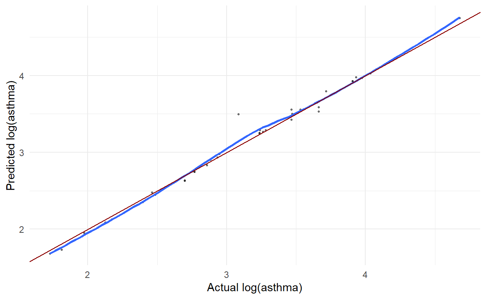

Advanced Data Science
library(tidyverse) # for graphing and data cleaning
library(tidymodels) # for modeling
library(stacks) # for stacking models
library(naniar) # for analyzing missing values
library(vip) # for variable importance plots
library(usemodels) # for tidymodels suggestions
library(xgboost) # for boosting - need to install, don't need to load
library(doParallel) # for parallel processing
library(lubridate) # for dates
library(moderndive) # for King County housing data
library(patchwork) # for combining plots nicely
library(rmarkdown) # for paged tables
library(shiny) # for shiny dashboard
library(bslib) # for theming
library(usmap) # for maping
library(Metrics) # for calculating metric
theme_set(theme_minimal()) # Lisa's favorite theme
This project builds models to examine the relationship between various environmental and socioeconomic factors and health outcomes in California counties. A large portion of the project involved compiling the data from different publicly available sources, and some decisions on what to include and disclude were made based on the data that could be found. We ultimately chose to focus our analysis on California counties because of an abundance of publicly available data and included the years 2017, 2018, and 2019 because a variety of data had been collected in that time but were uninfluenced by the pandemic.
We built models predicting four different health outcomes - asthma, breast cancer, heart disease, and Alzheimer’s disease - but the dataset we created contains more than twenty other possible health outcomes standardized on a per person basis, making it easy for anyone to create their own.
Data for this project was collected from a wide variety of sources, most of which are available through the California Open Data Portal. Below is a list of data sources we used, each of which were standardized by population:
Because we combined data from 5 sources with 10+ datasets, our data cleaning process was complex and tedious. Instead of including all of them in this blog, here is a link to our GitHub repository, where all datasets and data cleaning files could be found.
Use the interactive graphic below to explore the relationships between the predictors and outcomes in our dataset. If it doesn’t load, access it here.
knitr::include_app("https://miarothberg.shinyapps.io/Final_Project/", height = "600px")
There is an extensive body of research documenting the relationship between air pollution and asthma, which was the initial inspiration for this project. Increases in concentrations of particulate matter, sulfur dioxide, nitrogen dioxide, and ozone have been documented as directly correlated with increases in asthma-related emergency room visits. A general lack of air quality data led us to pursue other possible correlations, especially those provided by the healthy places index dataset.
Recent research has also revealed a positive correlation between those same air pollutants and breast cancer incidence rates. Variables such as education rate, income, and employment are also known to influence breast cancer prevalence, so were included in our model. Breast cancer has also been documented to be genetic, so we did not expect to be able to explain all variation in cancer rates by environmental and socioeconomic factors alone.
Long term exposure to air pollutants has been shown to contribute to cognitive decline in a variety of ways, including by increasing the risk of Alzheimer’s disease and hastening it’s onset. Maternal exposure to these pollutants has also been associated with increased risk of autism and ADHD, but we were unable to find data documenting those diagnoses.
Finally, research using an EPA dataset has established that long-term exposure to particulate matter and nitrogen oxides at levels close to the National Ambient Air Quality Standards can prematurely age blood vessels and contribute to a more rapid buildup of calcium in the coronary artery, leading to heart disease.
pollution <- read.csv("data_standardized.csv")
pollution %>%
select(where(is.numeric)) %>%
pivot_longer(cols = everything(),
names_to = "variable",
values_to = "value") %>%
ggplot(aes(x = value)) +
geom_histogram(bins = 30) +
facet_wrap(vars(variable),
scales = "free",
nrow = 5)
Based on the histogram above, we can see that asthma_er_avg is right_skewed. Also, to get rid of NA values without losing observations, we decided to replace all NAs with the median value of the column.
pollution_mod <- pollution %>%
mutate(log_asthma = log(asthma_er_avg, base = 10)) %>%
select(-asthma_er_avg) %>%
mutate(across(where(is.character), as.factor)) %>%
add_n_miss() %>%
filter(n_miss_all == 0) %>%
select(-n_miss_all)
set.seed(456)
pollution_split <- initial_split(pollution_mod, prop = .75)
pollution_training <- training(pollution_split)
pollution_testing <- testing(pollution_split)
To fix to right-skewed shape, we performed a log transformation before using it as the outcome variable in models. We also made sure that all character variables are mutated to factor variables and reassured there were no more NAs.
The dataset has 153 observations of 64 variables in total. 75% (114 observations) were split to be in the training set and 25% (39 observations) were in the testing set.
In modeling our data, we decided to look at five different machine learning techniques to determine the best model to predict the health outcomes due to environmental and socioeconomic models.
Lasso model uses both dimension reduction and variable selection in determining the best predictors for the outcomes. We preprocessed the data for the lasso model and removed some variables and normalized the rest of the predictors.
pollution_recipe <- recipe(log_asthma ~ ., data = pollution_training) %>%
step_rm(County,
Year,
All.causes..total.,
Alzheimer.s.disease,
Malignant.neoplasms,
Chronic.lower.respiratory.diseases,
Diabetes.mellitus,
Assault..homicide.,
Diseases.of.heart,
Essential.hypertension.and.hypertensive.renal.disease,
Accidents..unintentional.injuries.,
Chronic.liver.disease.and.cirrhosis,
Nephritis..nephrotic.syndrome.and.nephrosis,
Parkinson.s.disease,
Influenza.and.pneumonia,
Cerebrovascular.diseases,
Intentional.self.harm..suicide.,
FIPS,
cancer_incidence_rate,
asthma_deaths,
Bladder_Surgery_Ct,
Brain_Surgery_Ct,
Breast_Surgery_Ct,
Colon_Surgery_Ct,
Esophagus_Surgery_Ct,
Liver_Surgery_Ct,
Lung_Surgery_Ct,
Pancreas_Surgery_Ct,
Prostate_Surgery_Ct,
Rectum_Surgery_Ct,
Stomach_Surgery_Ct) %>%
step_normalize(all_predictors(),
-all_nominal()) %>%
step_dummy(all_nominal(),
-all_outcomes())
Then applied it to our training data.
# A tibble: 114 x 33
annual_mean_pm25 annual_mean_ozone annual_mean_pb annual_mean_pm10
<dbl> <dbl> <dbl> <dbl>
1 0.769 1.91 -0.438 1.20
2 -0.791 -0.0862 -0.176 -0.426
3 0.0376 -0.153 -0.176 0.136
4 0.130 -0.118 -0.176 0.0213
5 -0.851 0.0999 -0.969 -0.949
6 -0.625 -0.107 -0.860 -0.442
7 0.861 -0.0905 -0.176 -0.150
8 1.70 0.645 -0.176 -1.08
9 -1.25 -1.03 -0.176 -0.150
10 3.09 -0.0905 -0.176 -0.150
# ... with 104 more rows, and 29 more variables:
# annual_mean_co <dbl>, annual_mean_no2 <dbl>,
# annual_mean_so2 <dbl>, hpi2score <dbl>, economic <dbl>,
# education <dbl>, housing <dbl>, healthcareaccess <dbl>,
# neighborhood <dbl>, pollution <dbl>, transportation <dbl>,
# social <dbl>, insured <dbl>, uncrowded <dbl>,
# homeownership <dbl>, automobile <dbl>, commute <dbl>, ...To define the model we chose linear regression and other arguments to fit the model.
We then created a workflow with our recipe and defined model.
penalty_grid <- grid_regular(penalty(),
levels = 20)
penalty_grid
# A tibble: 20 x 1
penalty
<dbl>
1 1 e-10
2 3.36e-10
3 1.13e- 9
4 3.79e- 9
5 1.27e- 8
6 4.28e- 8
7 1.44e- 7
8 4.83e- 7
9 1.62e- 6
10 5.46e- 6
11 1.83e- 5
12 6.16e- 5
13 2.07e- 4
14 6.95e- 4
15 2.34e- 3
16 7.85e- 3
17 2.64e- 2
18 8.86e- 2
19 2.98e- 1
20 1 e+ 0We then tuned the model using a penalty grid and determined our number of resamples.
ctrl_grid <- control_stack_grid()
set.seed(456)
pollution_cv <- vfold_cv(pollution_training, v = 5)
pollution_lasso_tune <-
pollution_lasso_wf %>%
tune_grid(
resamples = pollution_cv,
grid = penalty_grid,
control = ctrl_grid
)
pollution_lasso_tune
# Tuning results
# 5-fold cross-validation
# A tibble: 5 x 5
splits id .metrics .notes .predictions
<list> <chr> <list> <list> <list>
1 <split [91/23]> Fold1 <tibble [40 x 5]> <tibble [1 ~ <tibble [460 x~
2 <split [91/23]> Fold2 <tibble [40 x 5]> <tibble [1 ~ <tibble [460 x~
3 <split [91/23]> Fold3 <tibble [40 x 5]> <tibble [1 ~ <tibble [460 x~
4 <split [91/23]> Fold4 <tibble [40 x 5]> <tibble [1 ~ <tibble [460 x~
5 <split [92/22]> Fold5 <tibble [40 x 5]> <tibble [1 ~ <tibble [440 x~Looked at the RMSE of the model output to determine the best model to use on the testing data.
# A tibble: 100 x 6
id penalty .metric .estimator .estimate .config
<chr> <dbl> <chr> <chr> <dbl> <chr>
1 Fold1 1 e-10 rmse standard 0.232 Preprocessor1_Model01
2 Fold1 3.36e-10 rmse standard 0.232 Preprocessor1_Model02
3 Fold1 1.13e- 9 rmse standard 0.232 Preprocessor1_Model03
4 Fold1 3.79e- 9 rmse standard 0.232 Preprocessor1_Model04
5 Fold1 1.27e- 8 rmse standard 0.232 Preprocessor1_Model05
6 Fold1 4.28e- 8 rmse standard 0.232 Preprocessor1_Model06
7 Fold1 1.44e- 7 rmse standard 0.232 Preprocessor1_Model07
8 Fold1 4.83e- 7 rmse standard 0.232 Preprocessor1_Model08
9 Fold1 1.62e- 6 rmse standard 0.232 Preprocessor1_Model09
10 Fold1 5.46e- 6 rmse standard 0.232 Preprocessor1_Model10
# ... with 90 more rowsWe then visualized the RMSE as a function of the penalty value.
pollution_lasso_tune %>%
collect_metrics() %>%
filter(.metric == "rmse") %>%
ggplot(aes(x = penalty, y = mean)) +
geom_point() +
geom_line() +
scale_x_log10(
breaks = scales::trans_breaks("log10", function(x) 10^x),
labels = scales::trans_format("log10",scales::math_format(10^.x))) +
labs(x = "penalty", y = "rmse")

We used the show_best() and select_best() functions to select the best model.
pollution_lasso_tune %>%
show_best(metric = "rmse")
# A tibble: 5 x 7
penalty .metric .estimator mean n std_err .config
<dbl> <chr> <chr> <dbl> <int> <dbl> <chr>
1 0.00785 rmse standard 0.282 5 0.0127 Preprocessor1_Model~
2 0.00234 rmse standard 0.302 5 0.0147 Preprocessor1_Model~
3 0.0264 rmse standard 0.328 5 0.0154 Preprocessor1_Model~
4 0.000695 rmse standard 0.336 5 0.0344 Preprocessor1_Model~
5 0.000207 rmse standard 0.346 5 0.0440 Preprocessor1_Model~best_param <- pollution_lasso_tune %>%
select_best(metric = "rmse")
best_param
# A tibble: 1 x 2
penalty .config
<dbl> <chr>
1 0.00785 Preprocessor1_Model16one_se_param <- pollution_lasso_tune %>%
select_by_one_std_err(metric = "rmse", desc(penalty))
one_se_param
# A tibble: 1 x 9
penalty .metric .estimator mean n std_err .config .best .bound
<dbl> <chr> <chr> <dbl> <int> <dbl> <chr> <dbl> <dbl>
1 0.00785 rmse standard 0.282 5 0.0127 Preproc~ 0.282 0.295We then finalized the workflow using the selected lasso model.
pollution_lasso_final_wf <- pollution_lasso_wf %>%
finalize_workflow(one_se_param)
pollution_lasso_final_wf
== Workflow ==========================================================
Preprocessor: Recipe
Model: linear_reg()
-- Preprocessor ------------------------------------------------------
3 Recipe Steps
* step_rm()
* step_normalize()
* step_dummy()
-- Model -------------------------------------------------------------
Linear Regression Model Specification (regression)
Main Arguments:
penalty = 0.00784759970351461
mixture = 1
Computational engine: glmnet Using this finalized workflow, we fit the data to the training data and visualized the estimate values.
pollution_lasso_final_mod <- pollution_lasso_final_wf %>%
fit(data = pollution_training)
pollution_lasso_final_mod %>%
pull_workflow_fit() %>%
tidy()
# A tibble: 33 x 3
term estimate penalty
<chr> <dbl> <dbl>
1 (Intercept) 2.97 0.00785
2 annual_mean_pm25 0 0.00785
3 annual_mean_ozone 0.00160 0.00785
4 annual_mean_pb 0.0210 0.00785
5 annual_mean_pm10 -0.161 0.00785
6 annual_mean_co 0.0539 0.00785
7 annual_mean_no2 -0.132 0.00785
8 annual_mean_so2 0.0652 0.00785
9 hpi2score 0 0.00785
10 economic 0 0.00785
# ... with 23 more rowsWe then looked at the evaluation metrics across all folds.
pollution_lasso_test <- pollution_lasso_final_wf %>%
last_fit(pollution_split)
# Metrics for model applied to test data
pollution_lasso_test %>%
collect_metrics()
# A tibble: 2 x 4
.metric .estimator .estimate .config
<chr> <chr> <dbl> <chr>
1 rmse standard 0.267 Preprocessor1_Model1
2 rsq standard 0.846 Preprocessor1_Model1First we used the use_xgboost() function, which gives recommendation on how to build our recipe, workflow, etc.
use_xgboost(log_asthma ~ ., data = pollution_training)
xgboost_recipe <-
recipe(formula = log_asthma ~ ., data = pollution_training) %>%
step_novel(all_nominal(), -all_outcomes()) %>%
step_dummy(all_nominal(), -all_outcomes(), one_hot = TRUE) %>%
step_zv(all_predictors())
xgboost_spec <-
boost_tree(trees = tune(), min_n = tune(), tree_depth = tune(), learn_rate = tune(),
loss_reduction = tune(), sample_size = tune()) %>%
set_mode("regression") %>%
set_engine("xgboost")
xgboost_workflow <-
workflow() %>%
add_recipe(xgboost_recipe) %>%
add_model(xgboost_spec)
set.seed(90624)
xgboost_tune <-
tune_grid(xgboost_workflow, resamples = stop("add your rsample object"), grid = stop("add number of candidate points"))Based on output from the use_xgboost() function and our previous recipes, we created our own recipe.
boost_recipe <-
recipe(formula = log_asthma ~ ., data = pollution_training) %>%
step_rm(County,
Year,
All.causes..total.,
Alzheimer.s.disease,
Malignant.neoplasms,
Chronic.lower.respiratory.diseases,
Diabetes.mellitus,
Assault..homicide.,
Diseases.of.heart,
Essential.hypertension.and.hypertensive.renal.disease,
Accidents..unintentional.injuries.,
Chronic.liver.disease.and.cirrhosis,
Nephritis..nephrotic.syndrome.and.nephrosis,
Parkinson.s.disease,
Influenza.and.pneumonia,
Cerebrovascular.diseases,
Intentional.self.harm..suicide.,
FIPS,
cancer_incidence_rate,
asthma_deaths,
Bladder_Surgery_Ct,
Brain_Surgery_Ct,
Breast_Surgery_Ct,
Colon_Surgery_Ct,
Esophagus_Surgery_Ct,
Liver_Surgery_Ct,
Lung_Surgery_Ct,
Pancreas_Surgery_Ct,
Prostate_Surgery_Ct,
Rectum_Surgery_Ct,
Stomach_Surgery_Ct) %>%
step_novel(all_nominal_predictors()) %>%
step_dummy(all_nominal_predictors(), one_hot = TRUE) %>%
step_zv(all_predictors()) %>%
step_normalize(all_predictors(),
-all_nominal())
Next, we specified the model. learn_rate is the parameter we decided to tune, and we created a grid of 10 values to try in tuning for learn_rate as the following:
boost_spec <- boost_tree(
trees = 1000, # number of trees, T in the equations above
tree_depth = 2, # max number of splits in the tree
min_n = 5, # min points required for node to be further split
loss_reduction = 10^-5, # when to stop - smaller = more since it only has to get a little bit better
sample_size = 1, # proportion of training data to use
learn_rate = tune(), # lambda from the equations above
stop_iter = 50 # number of iterations w/o improvement b4 stopping
) %>%
set_engine("xgboost", colsample_bytree = 1) %>%
set_mode("regression")
boost_grid <- grid_regular(learn_rate(),
levels = 10)
boost_grid
# A tibble: 10 x 1
learn_rate
<dbl>
1 0.0000000001
2 0.000000001
3 0.00000001
4 0.0000001
5 0.000001
6 0.00001
7 0.0001
8 0.001
9 0.01
10 0.1 We then put the recipe and model specification into a workflow.
The next step is to train these models. registerDoParallel() was used to speed up the process.
set.seed(456)
registerDoParallel()
boost_tune <- boost_wf %>%
tune_grid(
# resamples = val_split,
resamples = pollution_cv,
grid = boost_grid,
control = ctrl_grid
)
Here is a table summarizing the results. We can see that larger learning rates actually seem to do better.
collect_metrics(boost_tune)
# A tibble: 20 x 7
learn_rate .metric .estimator mean n std_err .config
<dbl> <chr> <chr> <dbl> <int> <dbl> <chr>
1 0.0000000001 rmse standard 2.57 5 0.0333 Preprocesso~
2 0.0000000001 rsq standard NaN 0 NA Preprocesso~
3 0.000000001 rmse standard 2.57 5 0.0333 Preprocesso~
4 0.000000001 rsq standard NaN 0 NA Preprocesso~
5 0.00000001 rmse standard 2.57 5 0.0333 Preprocesso~
6 0.00000001 rsq standard 0.0589 1 NA Preprocesso~
7 0.0000001 rmse standard 2.57 5 0.0333 Preprocesso~
8 0.0000001 rsq standard 0.741 5 0.0486 Preprocesso~
9 0.000001 rmse standard 2.57 5 0.0333 Preprocesso~
10 0.000001 rsq standard 0.751 5 0.0511 Preprocesso~
11 0.00001 rmse standard 2.55 5 0.0333 Preprocesso~
12 0.00001 rsq standard 0.746 5 0.0603 Preprocesso~
13 0.0001 rmse standard 2.34 5 0.0340 Preprocesso~
14 0.0001 rsq standard 0.764 5 0.0594 Preprocesso~
15 0.001 rmse standard 1.09 5 0.0382 Preprocesso~
16 0.001 rsq standard 0.800 5 0.0569 Preprocesso~
17 0.01 rmse standard 0.217 5 0.0187 Preprocesso~
18 0.01 rsq standard 0.915 5 0.0377 Preprocesso~
19 0.1 rmse standard 0.134 5 0.0130 Preprocesso~
20 0.1 rsq standard 0.959 5 0.0155 Preprocesso~We also plotted the rmse to visually support our conclusion above.
collect_metrics(boost_tune) %>%
filter(.metric == "rmse") %>%
ggplot(aes(x = learn_rate, y = mean)) +
geom_point() +
geom_line() +
scale_x_log10() +
labs(y = "rmse") +
theme_minimal()

Then we decided to select the best learning rate parameter and finalize the model.
best_lr <- select_best(boost_tune, "rmse")
best_lr
# A tibble: 1 x 2
learn_rate .config
<dbl> <chr>
1 0.1 Preprocessor1_Model10# finalize workflow
final_boost_wf <- finalize_workflow(
boost_wf,
best_lr
)
# fit final
final_boost <- final_boost_wf %>%
fit(data = pollution_training)
This graph tells us which predictors are the most important. It seems that supermarkets, annual_mean_no2, and homeownership have the largest influence on asthma ER visit.
The final model was also fitted to the testing data. We can see the testing rmse is 0.05, larger than the training rmse.
# Use model on test data
test_preds <- pollution_testing %>%
bind_cols(predict(final_boost, new_data = pollution_testing))
# Compute test rmse
test_preds %>%
summarize(rmse = sqrt(mean((log_asthma - .pred)^2))) %>%
pull(rmse)
[1] 0.05400519The graph below visualized the results. We can conclude that the predicted values are very close to the actual values.
# Graph results
test_preds %>%
ggplot(aes(x = log_asthma,
y = .pred)) +
geom_point(alpha = .5,
size = .5) +
geom_smooth(se = FALSE) +
geom_abline(slope = 1,
intercept = 0,
color = "darkred") +
labs(x = "Actual log(asthma)",
y = "Predicted log(asthma)")

We set up the random forest model with its recipe and preprocessing steps.
pollution_rfrecipe <- recipe(log_asthma ~ ., data = pollution_training) %>%
step_rm(County,
Year,
All.causes..total.,
Alzheimer.s.disease,
Malignant.neoplasms,
Chronic.lower.respiratory.diseases,
Diabetes.mellitus,
Assault..homicide.,
Diseases.of.heart,
Essential.hypertension.and.hypertensive.renal.disease,
Accidents..unintentional.injuries.,
Chronic.liver.disease.and.cirrhosis,
Nephritis..nephrotic.syndrome.and.nephrosis,
Parkinson.s.disease,
Influenza.and.pneumonia,
Cerebrovascular.diseases,
Intentional.self.harm..suicide.,
FIPS,
cancer_incidence_rate,
asthma_deaths,
Bladder_Surgery_Ct,
Brain_Surgery_Ct,
Breast_Surgery_Ct,
Colon_Surgery_Ct,
Esophagus_Surgery_Ct,
Liver_Surgery_Ct,
Lung_Surgery_Ct,
Pancreas_Surgery_Ct,
Prostate_Surgery_Ct,
Rectum_Surgery_Ct,
Stomach_Surgery_Ct) %>%
step_normalize(all_predictors(),
-all_nominal()) %>%
step_dummy(all_nominal(),
-all_outcomes())
Applied the recipe to the training data.
# A tibble: 114 x 33
annual_mean_pm25 annual_mean_ozone annual_mean_pb annual_mean_pm10
<dbl> <dbl> <dbl> <dbl>
1 0.769 1.91 -0.438 1.20
2 -0.791 -0.0862 -0.176 -0.426
3 0.0376 -0.153 -0.176 0.136
4 0.130 -0.118 -0.176 0.0213
5 -0.851 0.0999 -0.969 -0.949
6 -0.625 -0.107 -0.860 -0.442
7 0.861 -0.0905 -0.176 -0.150
8 1.70 0.645 -0.176 -1.08
9 -1.25 -1.03 -0.176 -0.150
10 3.09 -0.0905 -0.176 -0.150
# ... with 104 more rows, and 29 more variables:
# annual_mean_co <dbl>, annual_mean_no2 <dbl>,
# annual_mean_so2 <dbl>, hpi2score <dbl>, economic <dbl>,
# education <dbl>, housing <dbl>, healthcareaccess <dbl>,
# neighborhood <dbl>, pollution <dbl>, transportation <dbl>,
# social <dbl>, insured <dbl>, uncrowded <dbl>,
# homeownership <dbl>, automobile <dbl>, commute <dbl>, ...Set up penalty grid model.
Tuned the model and determine the best RMSE.
set.seed(456)
pollution_cv <- vfold_cv(pollution_training, v = 5)
pollution_rfTUNE <-
pollution_rfworkflow %>%
tune_grid(
resamples = pollution_cv,
grid = rf_penalty_grid,
control = ctrl_grid
)
best_rmse <-
pollution_rfTUNE %>%
select_best(metric = "rmse")
best_rmse
# A tibble: 1 x 3
mtry min_n .config
<int> <int> <chr>
1 32 2 Preprocessor1_Model2Fitting model to testing data.
Finding the RMSE of the testing data.
predictions_rf <- pollution_testing %>%
select(log_asthma) %>%
bind_cols(predict(pol_rfFinal, new_data = pollution_testing))
predictions_rf %>%
summarize(training_rmse = sqrt(mean((log_asthma - .pred)^2)))
training_rmse
1 0.08511188predictions_rf %>%
ggplot(aes(x = log_asthma,
y = .pred)) +
geom_point(alpha = .5,
size = .5) +
geom_smooth(se = FALSE) +
geom_abline(slope = 1,
intercept = 0,
color = "darkred") +
labs(x = "Actual log(asthma)",
y = "Predicted log(asthma)")

After we had our set of candidate models (9 random forest, 20 lasso, and 10 boost), we started stacking. We followed the process laid out on the stacks webpage.
First, we created the stack. Shown by the number of columns, it removed some of the lasso models, likely since they were too similar to other lasso models. The set of candidate models now has 9 random forest, 9 lasso, and 9 boost.
pollution_stack <-
stacks() %>%
add_candidates(boost_tune) %>%
add_candidates(pollution_lasso_tune) %>%
add_candidates(pollution_rfTUNE)
We can look at the predictions from the candidate models in a tibble. Most of the predictions are very close to the actual values, except the first few boost models.
as_tibble(pollution_stack)
# A tibble: 114 x 28
log_asthma boost_tune_1_01 boost_tune_1_03 boost_tune_1_04
<dbl> <dbl> <dbl> <dbl>
1 3.65 0.5 0.5 0.500
2 2.06 0.5 0.5 0.500
3 2.06 0.5 0.5 0.500
4 2.82 0.5 0.5 0.500
5 3.05 0.5 0.5 0.500
6 3.98 0.5 0.5 0.500
7 1.95 0.5 0.5 0.500
8 2.29 0.5 0.5 0.500
9 2.17 0.5 0.5 0.500
10 1.73 0.5 0.5 0.500
# ... with 104 more rows, and 24 more variables:
# boost_tune_1_05 <dbl>, boost_tune_1_06 <dbl>,
# boost_tune_1_07 <dbl>, boost_tune_1_08 <dbl>,
# boost_tune_1_09 <dbl>, boost_tune_1_10 <dbl>,
# pollution_lasso_tune_1_01 <dbl>, pollution_lasso_tune_1_13 <dbl>,
# pollution_lasso_tune_1_14 <dbl>, pollution_lasso_tune_1_15 <dbl>,
# pollution_lasso_tune_1_16 <dbl>, ...We wanted to blend the predictions from each model together to form an even better overall prediction using the blend_predictions() function. Doing this with our models, we see only 4 models have non-zero coefficients, 1 random forest, 2 lasso, and 1 boost:
set.seed(456)
pollution_blend <-
pollution_stack %>%
blend_predictions()
pollution_blend
# A tibble: 4 x 3
member type weight
<chr> <chr> <dbl>
1 pollution_rfTUNE_1_2 rand_forest 0.727
2 boost_tune_1_10 boost_tree 0.282
3 pollution_lasso_tune_1_18 linear_reg 0.0699
4 pollution_lasso_tune_1_19 linear_reg 0.0127Here is the rmse for the various penalty parameters:
# A tibble: 6 x 8
penalty mixture .metric .estimator mean n std_err .config
<dbl> <dbl> <chr> <chr> <dbl> <int> <dbl> <chr>
1 0.000001 1 rmse standard 0.104 25 0.00232 Preprocesso~
2 0.00001 1 rmse standard 0.104 25 0.00232 Preprocesso~
3 0.0001 1 rmse standard 0.104 25 0.00232 Preprocesso~
4 0.001 1 rmse standard 0.104 25 0.00234 Preprocesso~
5 0.01 1 rmse standard 0.105 25 0.00260 Preprocesso~
6 0.1 1 rmse standard 0.152 25 0.00470 Preprocesso~We can examine some plots to see if we need to adjust the penalty parameter at all. This set of three plots with penalty on the x axis shows that we seem to have captured the smallest RMSE.
autoplot(pollution_blend)

The blending weights for the top ensemble members are presented in this plot. The random forest has the highest weight, more than two times of the second highest weight boost has. The two lasso models have low weights.
autoplot(pollution_blend, type = "weights")

Finally we fit the candidate models with non-zero stacking coefficients to the full training data using fit_members() function. The numeric values of the blending weights for the top ensemble members are also printed out.
pollution_final_stack <- pollution_blend %>%
fit_members()
pollution_final_stack
# A tibble: 4 x 3
member type weight
<chr> <chr> <dbl>
1 pollution_rfTUNE_1_2 rand_forest 0.727
2 boost_tune_1_10 boost_tree 0.282
3 pollution_lasso_tune_1_18 linear_reg 0.0699
4 pollution_lasso_tune_1_19 linear_reg 0.0127Here is a plot comparing predicted and actual values after fitting it to the testing data. We can see the two lines are almost the same!
pollution_final_stack %>%
predict(new_data = pollution_testing) %>%
bind_cols(pollution_testing) %>%
ggplot(aes(x = log_asthma,
y = .pred)) +
geom_point(alpha = .5,
size = .5) +
geom_smooth(se = FALSE) +
geom_abline(slope = 1,
intercept = 0,
color = "darkred") +
labs(x = "Actual log(asthma)",
y = "Predicted log(asthma)")

data_rmse <- pollution_final_stack %>%
predict(new_data = pollution_testing) %>%
bind_cols(pollution_testing)
rmse(data_rmse$log_asthma, data_rmse$.pred)
[1] 0.080368The final plot, which shows the blue line of the predicted values nearly match the red line of the ideal values, and the low RMSE show that this model was fairly effective.
We created models in the same way for three other variables, which you can read about in the links below:
Overall, the Alzheimer’s disease death rate model was most effective at predicting the outcome variable and the breast cancer surgery rate model was the least effective. This suggests that many of the factors that worsen Alzheimer’s disease were present in our dataset but that it was missing factors that contribute to breast cancer. This makes sense, as breast cancer has been shown to be hereditary.
One major limitation with this project was the lack of data available. While we initially knew we wanted to focus on the relationship between air pollutants and various health outcomes, we chose to focus solely on California because that was the data that was available. We could only find limited data on air pollutants, so expanded our dataset to include data that we could find on socioeconomic variables. Additionally, many of the air pollutants had missing values, and we found that our dataset only had 13 complete cases that our models were being based on. To deal with this, we filled in all the NA values with the median value for each variable. This likely weakens the models, though they were still fairly strong.
If we only look at the visualizations displayed in the Shiny app, it is possible to come to conclusions that in reality do not make sense. For example, there seems to be a negative relationship between asthma ER visits and mean annual particulate matter 2.5, despite an extensive body of research and logic that indicate an opposite relationship. That is to say, because we have limited data from a certain area and many other factors play important roles affecting asthma, we should limit conclusions from examining the plots alone. It is also important to keep in mind that these models are not predicting health outcomes for any given individual; they are predicting the per person rate of the health outcome in each county. The models should not be used to determine insurance rates, but they could be used as the basis for policies that, for example, lower air pollutant limits or advocate for more accessible education.
It is also important to keep in mind that these models are not predicting health outcomes for any given individual; they are predicting the per person rate of the health outcome in each county. The models should not be used to determine insurance rates, but they could be used as the basis for policies that, for example, lower air pollutant limits or advocate for more accessible education.
The models created in this project were able to predict the chosen outcome variables with a fair amount of accuracy. A next step would be to focus on more interpretable machine learning, specifically creating an interactive ceteris paribus profile to easily visualize the exact impacts of each variable on the predictor.
The dataset we created contains numerous other health outcomes, each of which could be the subject of its own model with relatively little additional work. We chose to model the outcomes that we did because of previous research tying them to environmental factors, but it would be interesting to look for connections for the other variables as well.
Additionally, it would be useful to add more predictors to the dataset, especially those focused on the race and age distributions of each county. Those are currently missing from the dataset we built but are known risk factors for many health outcomes, so adding them may help to reveal any potentially confounding variables.